Rogério Ceni
Rogério Ceni
São Paulo Futebol Clube · São Paulo · Brasil · Desde 1930
TRICOLOR
O mais querido do Brasil. Tricampeão mundial, tricampeão da América, hexacampeão brasileiro — 96 anos de glória em vermelho, preto e branco.
- 3× Campeão mundial
- 3× Campeão da América
- 6× Campeão brasileiro
01 · Desde 1930
Uma história em vermelho, preto e branco
De um clube fundado por sócios apaixonados a uma das maiores forças do futebol mundial — com as cores que nenhum torcedor esquece.
-
1930
A fundação e o primeiro escudo
Em 25 de janeiro de 1930 nasce o São Paulo Futebol Clube, da união entre o Club Athletico Paulistano e a Associação Atlética das Palmeiras. Poucos dias depois, o coração de cinco pontas é desenhado por Walter Ostrich para o concurso interno do clube.
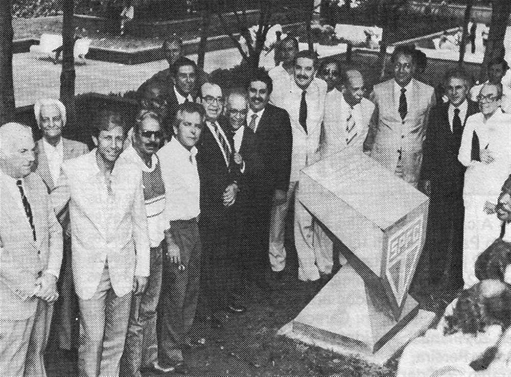
-
1932
Nasce a camisa listrada
Em 29 de maio, contra o Santos, o Tricolor estreia o uniforme nº 2: as listras verticais em vermelho, branco e preto que se tornariam parte da alma do clube. Vitória por 4 a 0.
-
1935
O reinício
Em meio a dificuldades financeiras, o clube se reorganiza e renasce. É nesse período que o tenente José Porphyrio da Paz compõe o hino — "Salve o Tricolor Paulista" — oficializado em 1942.
-
1943
A era do Diamante Negro
Com Leônidas da Silva, o Diamante Negro, o São Paulo monta um dos times mais espetaculares do país e domina o futebol paulista, eternizando a camisa na década de 40.
-
1960
Nasce o Morumbi
O estádio Cícero Pompeu de Toledo abre as portas ainda em obras. Nos anos seguintes se tornaria o maior estádio particular do mundo.
-
1970
O Tricolor de Aço
Com um futebol que valeu o apelido de "Tricolor de Aço", o São Paulo conquista o Campeonato Paulista fazendo do Morumbi uma fortaleza — a década termina com dois títulos estaduais e uma nova geração em campo.
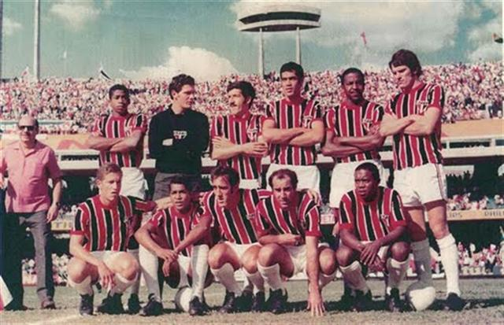
-
1977
O primeiro Brasileiro
O Tricolor conquista o Campeonato Brasileiro pela primeira vez, decidindo o título no Maracanã, e se firma entre as maiores forças do futebol nacional.
-
1986
O bicampeonato brasileiro
Sob o comando de Cilinho, a geração liderada por Careca conquista o Brasileiro de 1986: vitória nos pênaltis sobre o Guarani após duas finais dramáticas.
-
1992
O mundo fica tricolor
Sob Telê Santana, o São Paulo é campeão da Libertadores e depois do mundo, vencendo o Barcelona no Japão com dois gols de Raí.
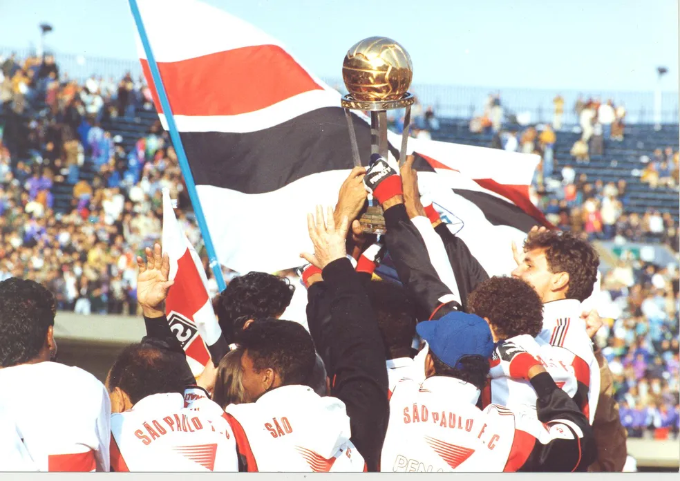
-
1993
Bicampeão de tudo
De novo Libertadores, de novo o mundo: na final contra o Milan, o Tricolor vence por 3 a 2 e eterniza uma das maiores camisas da história.
-
2005
O tri em Tóquio
Tricampeão da América e campeão mundial ao vencer o Liverpool por 1 a 0, com atuação histórica de Rogério Ceni e gol de Mineiro.
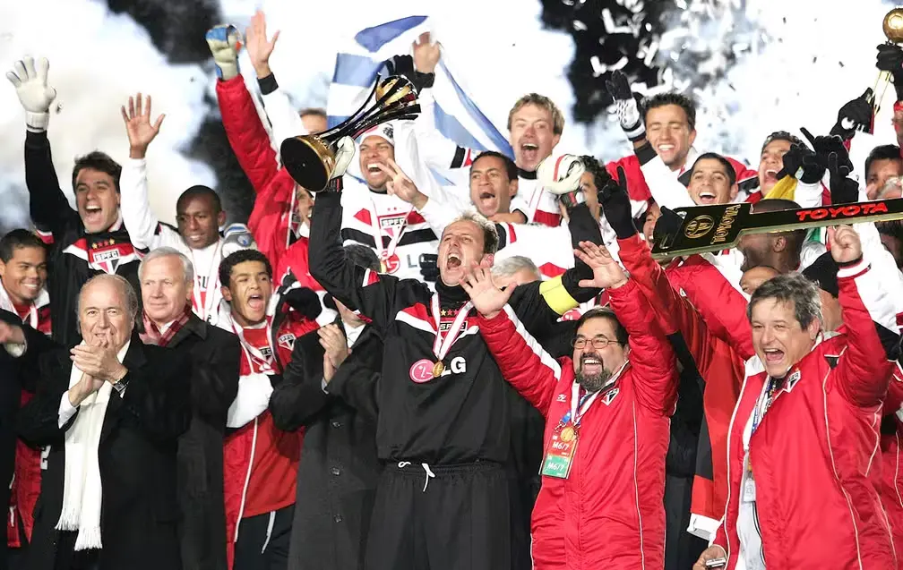
-
2006–2008
Hexa sem discussão
Com Muricy Ramalho no comando e Rogério Ceni em campo, o São Paulo é o único campeão brasileiro três vezes seguidas no formato de pontos corridos.
-
2012
A Sul-Americana
Contra o Tigre, na Argentina, o Tricolor conquista a Copa Sul-Americana de 2012 com atuação de Lucas — mais uma taça internacional para a coleção.
-
2021
O Paulista diante do rival
O Campeonato Paulista de 2021 volta ao Morumbi: vitória por 2 a 0 sobre o Palmeiras na final e mais um capítulo da história são-paulina no maior estádio particular do país.
-
2023–2024
O ciclo recomeça
Copa do Brasil em 2023 e Supercopa do Brasil em 2024: o Tricolor volta a levantar taças e segue entre os maiores campeões do país.
“Salve o Tricolor Paulista, amado clube brasileiro. Tu és forte, tu és grande — dentre os grandes, és o primeiro.”
Ó Tricolor, clube bem amado: as tuas glórias vêm do passado.
Hino oficial · Tenente José Porphyrio da Paz · composto em 1936 · oficializado em 1942
Ouvir o hino02 · O símbolo
O coração de cinco pontas
Desenhado dias após a fundação do clube, em 1930, e mantido até hoje — a forma que estampa o peito tricolor.
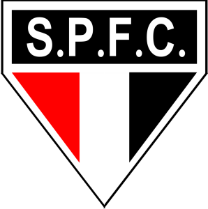
S.P.F.C. pontuado
1930 – 1935
Coração de cinco pontas
1935 – presente
03 · Os mantos
Camisas que entraram para a história
Do manto da fundação à camisa de Tóquio: cada tecido branco carrega uma história tricolor.
São Paulo FC é um dos poucos clubes do mundo cuja identidade visual está tão ligada a suas camisas. Desde 1930, cada geração de jogadores vestiu o branco com as três cores — e cada camisa conta uma história de conquista, identidade e orgulho.
-
01
1930
Uniforme nº 1O manto da fundação
Em 25 de janeiro de 1930, o clube nasce da fusão do Club Athletico Paulistano com a Associação Atlética das Palmeiras. A primeira camisa une as cores de ambos: o vermelho do Paulistano, o preto da AA Palmeiras e o branco que era comum aos dois clubes. Nas primeiras partidas, o manto já ostentava as três cores que se tornariam sinônimo do tricolor paulista.
9 de mar de 1930 · 3 a 0 sobre o Ypiranga · primeira vitória -
02
1932
Uniforme nº 2A camisa listrada
Inspirado nos grandes clubes europeus, o São Paulo adota as listras verticais vermelho, branco e preto em 1932. A estreia é memorável: o Tricolor goleia o Santos por 4 a 0, e a camisa ganha status de ícone. A partir daquele dia, as listras tricolores passam a representar a identidade visual do clube em campo e nas arquibancadas.
maio de 1932 · 4 a 0 sobre o Santos · estreia das listras -
03
1943
Era de LeônidasO inventor da bicicleta
A camisa de listras finas tricolores veste o maior jogador da história do clube: Leônidas da Silva, o Diamante Negro, inventor da bicicleta e primeiro grande ídolo do futebol brasileiro. Nos anos 1940, o São Paulo domina o futebol paulista com Leônidas em campo, e a camisa tricolor se eterniza como símbolo da era dourada do futebol nacional.
anos 1940 · 8 títulos paulistas · Leônidas, artilheiro -
04
1992
Era de TelêO time dos sonhos
Com Telê Santana no comando, o São Paulo entra para a história do futebol mundial. A camisa branca de 1992 — minimalista, com detalhes pretos e vermelhos — é vestida por Raí, Cafu, Müller, Palhinha, Zetti e Gilmar na maior campanha da história do clube. O Tricolor conquista a Libertadores, o Mundial e o Brasileiro no mesmo ano.
1992 e 1993 · bicampeão mundial · Intercontinental 2 a 1 sobre o Barcelona -
05
2005
A camisa de TóquioO tri sobre o Liverpool
Em 18 de dezembro de 2005, no Estádio Nacional de Tóquio, o São Paulo vence o Liverpool por 1 a 0 e se torna tricampeão mundial — o único clube brasileiro a conquistar a taça três vezes. O goleiro Rogério Ceni, capitão e artilheiro, levanta a taça com a camisa branca de faixa tricolor, eternizando o momento mais glorioso do clube no cenário internacional.
18 de dez de 2005 · 1 a 0 sobre o Liverpool · Rogério Ceni, capitão -
06
HOJE
O manto tricolor96 anos e contando
A camisa branca com as três cores continua vestindo uma nova geração de jogadores e torcedores. De 1930 até hoje, mais de 96 anos de história se acumulam no tecido tricolor — cada jogo, cada título, cada grito de gol é parte de uma tradição que atravessa décadas e continua escrevendo o futuro do clube mais querido do Brasil.
1930–presente · 96 anos · o mais querido do Brasil
04 · A galeria
Todos os títulos
São 12 títulos internacionais oficiais — o maior número entre os clubes brasileiros — e 20 taças nacionais e internacionais de grande porte.
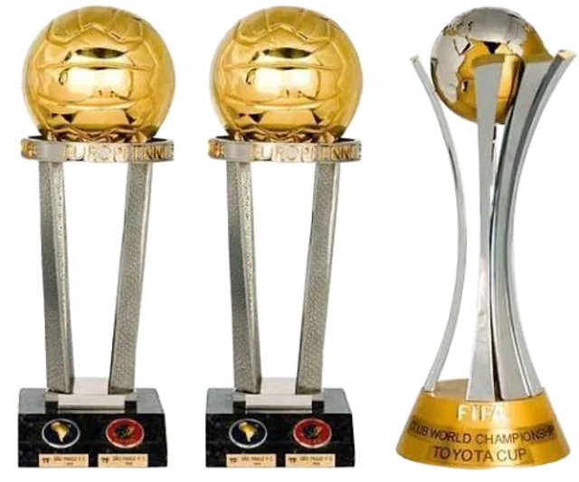
3×
Mundial de Clubes
1992 · 1993 · 2005
Nenhum outro clube brasileiro ergueu três vezes a maior taça do planeta. Só o Tricolor — e são três estrelas para provar.
-
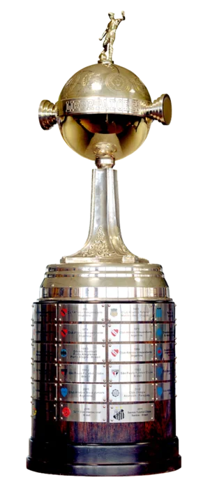
3×
Copa Libertadores
1992 · 1993 · 2005
-
6×
Campeonato Brasileiro
1977 · 1986 · 1991 · 2006 · 2007 · 2008
-
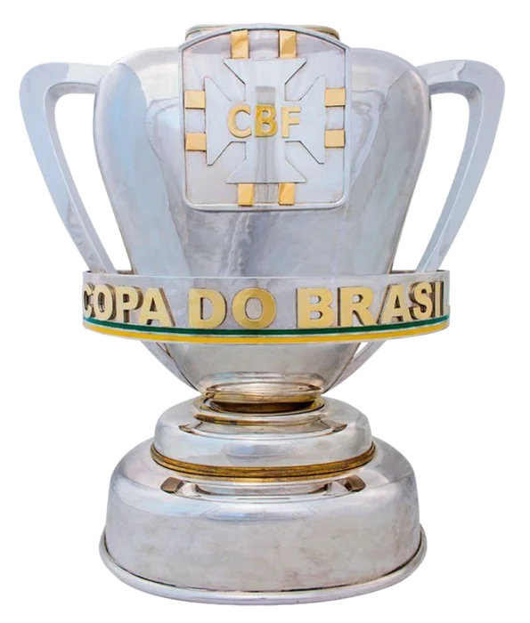
3×
Copa do Brasil
1998 · 2002 · 2023
-
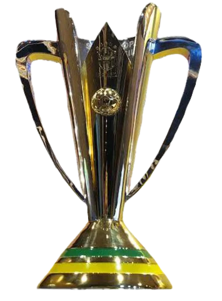
1×
Supercopa do Brasil
2024
-
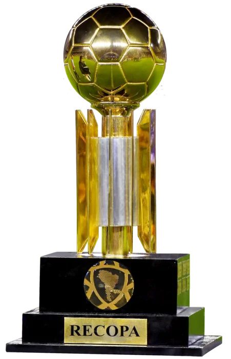
2×
Recopa Sul-Americana
1993 · 1994
-
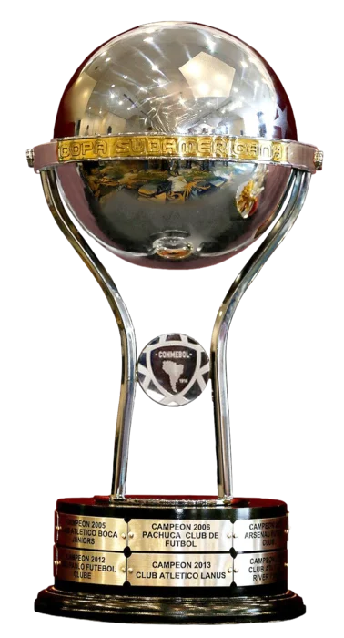
1×
Copa Sul-Americana
2012
-
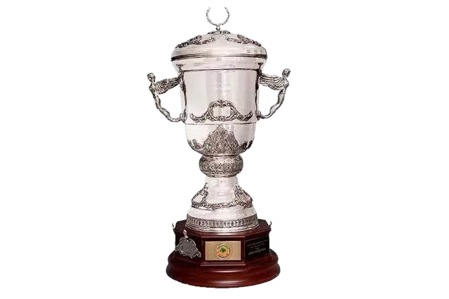
1×
Supercopa Libertadores
1993
-
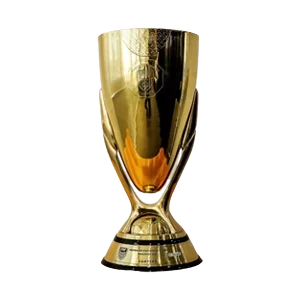
22×
Campeonato Paulista
1931 · 1943 · 1949 · 1953 · 1957 · 1970 · 1975 · 1980 · 1991 · 1992 · 1998 · 2000 · 2005 · 2021 · …
05 · Time da fé
A torcida e a base
O velhinho de barbas brancas, o grito que faz o estádio tremer e o celeiro de craques que alimenta o Tricolor.
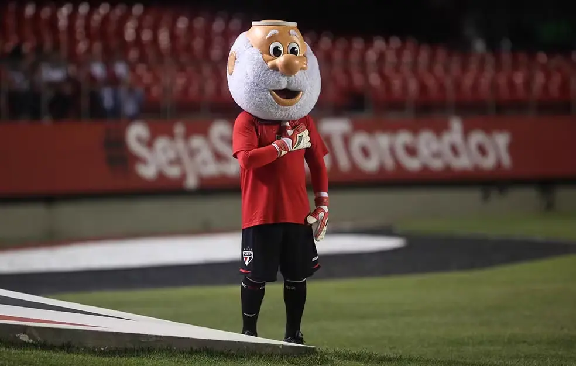
O Mascote
Santo Paulo, o vovô tricolor
O mascote eternizou-se nos cartuns do jornal A Gazeta, nos anos 1940. Chamado de "Santo Paulo" para não se confundir com o nome do clube, o simpático velhinho de barbas brancas representa o "time da fé" — o apóstolo Paulo, o padroeiro da cidade, dá nome ao clube desde a fundação em 25 de janeiro.
O grito que ecoa no MorumBIS
Ouça o grito
Arakan–Balan–Bakan
Arakan–Balan–Bakan
Tumerê–Tumerá · Macambê, bê-cam-bê-cá
Rico-réco, Rico-rá
Rá-rá-rá! São Paulo! São Paulo! São Paulo!
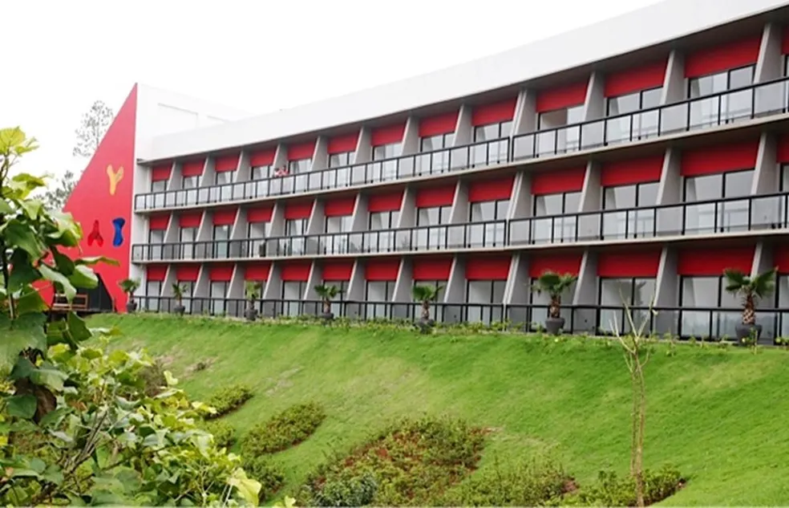
Made in Cotia
A fábrica de craques
O centro de treinamento da base é uma das fábricas de talento mais respeitadas do Brasil. De lá saíram craques que conquistaram o mundo — e que continuam enchendo o estádio de esperança.
- Kaká
- Lucas Moura
- Casemiro
- Hernanes
- Éder Militão
- Antony
- David Neres
Recorde de público
146.082
torcedores · 1977
Os grandes clássicos
San–São
São Paulo × Santos
O clássico mais antigo do Brasil ainda em atividade, disputado desde 1930.
est. 1930Choque-Rei
São Paulo × Palmeiras
Batizado pelo jornalista Tomaz Mazzoni nos anos 1940, é um dos maiores duelos do país.
anos 1940Majestoso
São Paulo × Corinthians
O duelo mais repetido do futebol paulista, com mais de 340 jogos em mais de 90 anos.
340+ jogos06 · As lendas do Morumbi
Ídolos que vestem a história
Goleiros artilheiros, mestres táticos e craques que fizeram o mundo aplaudir o Tricolor.
Rogério Ceni
 Raí
Raí
 Telê
Telê
 Muricy
Muricy
 Kaká
Kaká
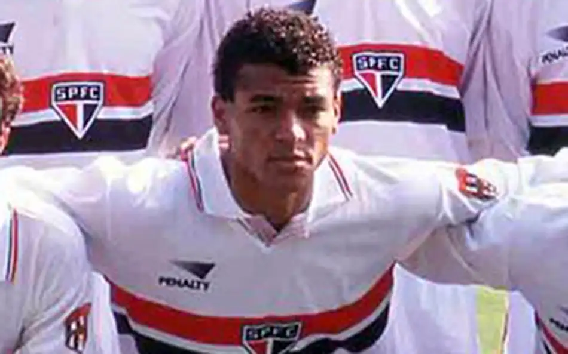
Cafu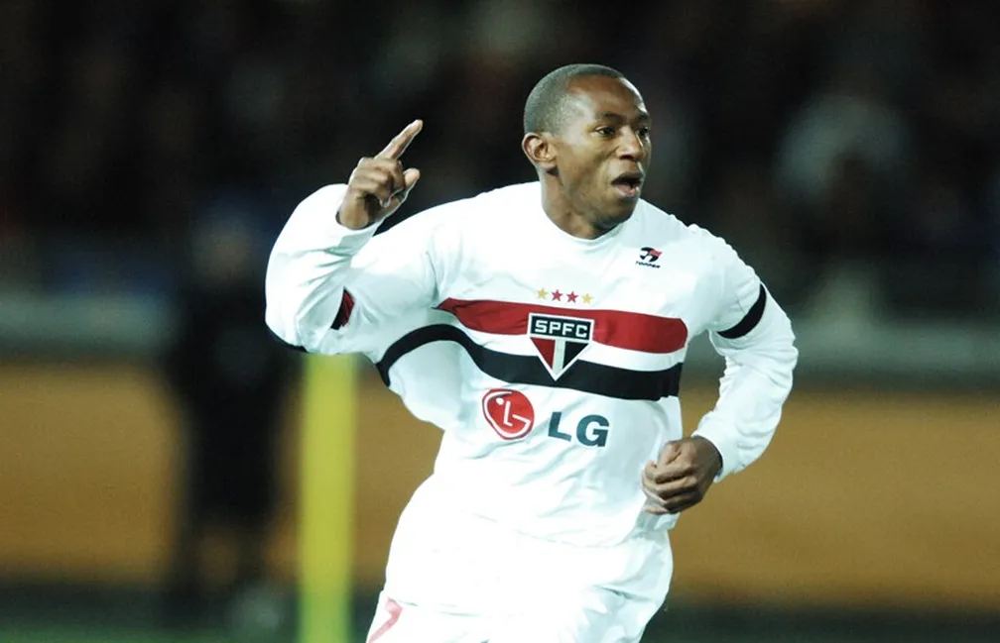
Mineiro
A casa · Estádio Cícero Pompeu de Toledo
MorumBIS
O maior estádio particular do Brasil e um dos templos mais imponentes do futebol mundial — onde o Tricolor joga há mais de seis décadas.
- 0lugares
- 0inauguração
- 0conclusão
- 0maior do Brasil
- 0particular do país
- 0tombado · Conpresp
O templo
Uma casa para a história
O MorumBIS é a sede do São Paulo FC e o palco das maiores noites da história tricolor — um templo erguido com recursos do próprio clube e levado pelo coro de uma torcida que nunca cala.
- Palco dos três Mundiais de Clubes — 92, 93 e 2005
- Públicos de mais de 100 mil nas finais mundiais de 92 e 93
- Projeto e construção financiados pelo próprio clube
- 1960 Inauguração do Cícero Pompeu de Toledo
- 1970 Conclusão do anel superior
- 2020 Naming rights e a chegada do MorumBIS
07 · O manto
Vista o tricolor
Uma história de 96 anos espera por você. Acompanhe o dia a dia, os bastidores e os próximos jogos no site oficial do clube.